그룹 대화방에서 바로 화상 회의를 엽니다. 도우미가 참여자로 들어와 화자별 자막을 띄우고, “견적서 다시 볼까요?” 같은 말에 맞는 자료를 찾아 보여 주고, 회의 중의 부탁을 일로 이어 줍니다. 쓰는 언어가 다르면 각자 자기 언어로 말하고, 다른 사람의 말은 자기 언어로 통역해 듣습니다. 회의가 끝나면 아무도 누르지 않아도 회의록이 대화방에 남습니다.
왜 대화방에서 회의를 하나#
15장에서는 그룹 대화방에서 글로 이야기했습니다. 이번에는 같은 방에서 얼굴을 보며 회의합니다.
회의 중에 “지난번 견적서”, “평면도 다시 보자”, “출장비 정산 어디까지 갔어요?” 같은 말이 나오면, 누군가 화면을 공유하고 파일을 찾아 헤맵니다. 그런데 그 자료는 이미 Lite 안에 있습니다. 대화방에 공유된 파일, 각자의 산출물, 진행 중인 프로세스, 공유 폴더의 문서입니다.
그리고 회의에서 나온 부탁(“금액을 5% 낮춰서 다시 만들어 주세요”)은 회의가 끝나면 잊히거나 누군가 다시 적어야 합니다. Lite의 회의는 대화방 안에서 열리기 때문에, 회의 내용이 그대로 그 방에 남고 부탁은 제안 카드로 이어집니다.
| 회의 중 | 도우미가 하는 일 |
|---|---|
| 말하면 | 각자 브라우저가 자기 마이크 소리만 말 단위로 보내고, 서버가 받아써서 화자별 자막으로 띄웁니다 |
| 자료를 가리키는 말 | 볼 권한이 있는 자료를 찾아 「자료」 패널에 띄웁니다(파일, 진행 상황, 패널 앱 데이터, 폴더 문서) |
| 「모두에게 띄우기」 | 모든 참여자의 무대에 같은 자료가 각자의 사본으로 열립니다 |
| 부탁하는 말 | 「시작 / 아니요」 제안 카드를 띄웁니다. 누른 사람의 에이전트가 일하고 결과를 자료 패널과 방에 올립니다 |
| 다른 언어로 말하면 | 원문 아래에 번역을 함께 띄우고, 듣는 사람마다 자기 언어로 통역해 들려 줍니다(「AI 통역」) |
| 회의가 끝나면 | 요약·결정·할 일·참여자·시간·띄운 자료가 담긴 회의록을 방에 남기고, 할 일은 맡은 사람에게 제안 카드로 띄웁니다 |
준비#
| 항목 | 내용 |
|---|---|
| 브라우저 | Chrome·Edge 최신판, 카메라와 마이크(없어도 들어갈 수는 있습니다) |
| 인원 | 한 회의에 6명까지. 참여자끼리 브라우저가 직접 연결되는 방식이라 사람이 늘수록 각자의 컴퓨터와 회선이 바빠집니다 |
| 받아쓰기 | 서버에 받아쓰기용 키가 있어야 자막·자료 찾기·회의록이 동작합니다(1장). 없으면 화상 회의만 됩니다 |
| 대화방 | 회의는 대화방에서 엽니다. 방 구성원만 들어오고, 자막과 자료도 구성원에게만 갑니다 |
| 자료 | 실습에서는 장진영 팀장이 그룹 대화방에 견적서와 평면도를 미리 올려 두었습니다(목요일 회의 때 같이 볼 2호점 견적서랑 평면도예요.) |
| 통역 | 선택. 주 언어가 다른 사람끼리 만나면 서버가 같은 OpenAI 키로 통역합니다(따라 하기 6) |
따라 하기 1 — 회의 시작과 동의#
- 15장의 그룹 대화방(장진영·김민지·박서연)을 엽니다.
- 방 머리줄의 「회의 시작」을 누릅니다. 들어가기 전 화면에서 카메라·마이크를 켜고 끌 수 있습니다.
- 「받아쓰기와 대화방 기록에 동의해요」를 켜고 「참여하기」를 누릅니다.
동의는 사람마다 따로 합니다. 동의하지 않은 사람의 소리는 브라우저가 서버로 보내지 않고, 서버도 받지 않습니다. 그 사람의 말은 자막과 회의록에 남지 않고, 회의록에는 “동의하지 않은 분”으로 적힙니다.
다른 두 사람도 같은 방의 「회의 시작」(진행 중이면 「회의 참여 · n명」)을 눌러 들어옵니다.
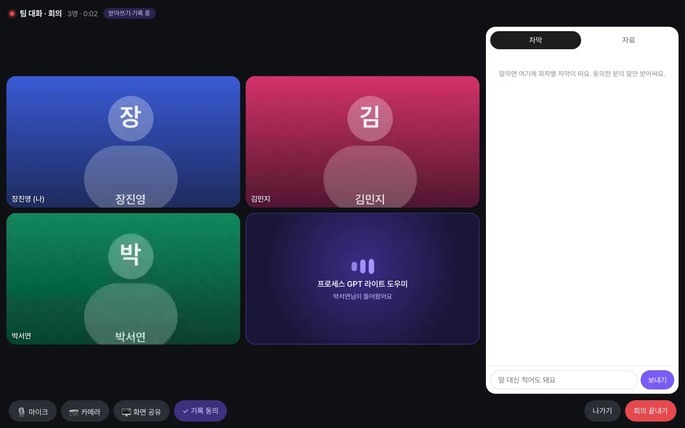
이 장의 화면 사진
세 계정으로 실제 회의를 열어 찍었습니다. 카메라 화면 자리에는 이름 그림이 보입니다. 받아쓰기·자료 찾기·제안·회의록은 모두 실제로 동작한 결과입니다.
따라 하기 2 — 말하면 자료가 뜬다#
회의에서 오간 말(실습 대본):
| 화자 | 말 |
|---|---|
| 장진영 | 자, 달빛커피 2호점 제안 건 시작해 볼게요. |
| 김민지 | 지난번에 보낸 달빛커피 견적서 다시 볼까요? |
| 박서연 | 좋아요. 평면도도 같이 봐요. 바 카운터 위치를 바꾸자고 하셨거든요. |
| 장진영 | 그리고 지난주 성수동 출장비 정산은 어디까지 갔어요? |
| 김민지 | 규정 검토는 끝났고, 지금 팀장님 결재만 남았어요. |
김민지의 말이 자막에 뜬 지 1~2초 뒤, 「자료」 패널에 견적서가 떴습니다. 이어서 평면도, 그리고 진행 중인 출장비 정산 프로세스의 진행 상황이 떴습니다. 이 출장비 정산은 김민지가 실측 출장 뒤에 청구한 것으로, 프로세스를 시작하고 결재하는 과정은 18장에서 직접 따라 합니다. 아직 진행 중인 프로세스가 없다면 이 자료는 뜨지 않습니다.
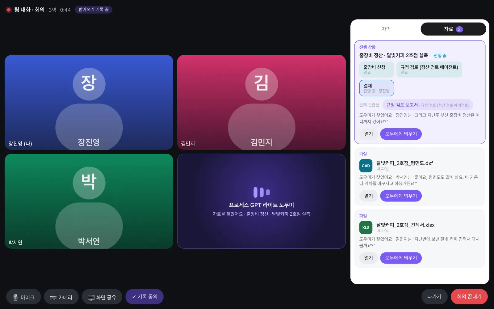
확인할 것
- 자료 카드마다 “도우미가 찾았어요 · 김민지님 "지난번에 보낸…"”처럼 근거가 된 말이 있습니다.
- 진행 상황 카드에는 단계별 상태(출장비 신청 완료 · 규정 검토 완료 · 결재 진행 중 · 장진영)와 단계 산출물(규정 검토 보고서)이 있습니다.
- 자료는 볼 수 있는 사람에게만 뜹니다. 방에 공유된 파일은 구성원 모두에게, 프로세스 진행 상황은 그 건에 관계된 사람에게만 보입니다(18장).
자료는 어떻게 찾나#
15장의 대화방 도우미와 같은 방식입니다. 굴러가는 자막에서 ① 규칙으로 잡담을 거르고 ② 작은 판단 모델이 “자료를 가리키는 말인가, 무엇을 가리키나”를 고릅니다. 판단 모델에는 최근 말 몇 줄만 갑니다. 실습 회의에서 판단 모델은 한 번에 0.33초 남짓(중앙값) 걸렸고, 알아차리는 데 큰 AI 모델은 한 번도 쓰지 않았습니다.
따라 하기 3 — 모두에게 띄우기#
장진영 팀장이 견적서 카드의 「모두에게 띄우기」를 누릅니다. 모든 참여자의 무대(가운데 큰 화면)에 견적서가 열립니다.
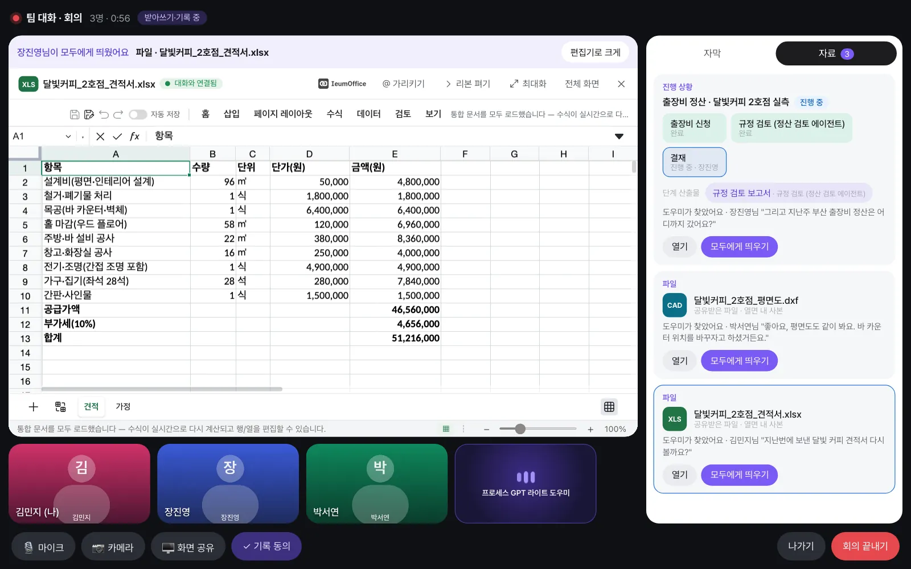
각자 자기 사본을 보므로, 김민지가 셀을 고쳐도 다른 사람의 화면이나 장진영 팀장의 원본은 바뀌지 않습니다. 같은 문서를 동시에 함께 고치는 공동 편집이 아니라는 점에 주의하세요. 「내리기」를 누르면 무대에서 내려갑니다.
따라 하기 4 — 회의 중의 부탁#
이어지는 대화:
| 화자 | 말 |
|---|---|
| 장진영 | 그럼 견적서를 다 같이 볼게요. |
| 박서연 | 사장님이 예산이 조금 빠듯하다고 하셨어요. |
| 김민지 | 그럼 견적서 금액을 5% 낮춰서 다시 만들어 주세요. |
김민지의 부탁이 「자료」 패널 맨 위에 제안 카드로 뜹니다.
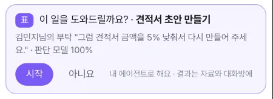
장진영 팀장이 「시작」을 누르면 장진영 팀장의 에이전트가 회의 자막과 띄운 견적서를 받아 일을 시작합니다. 대화방에는 “에이전트에게 맡겼어요 · 견적서 초안 만들기”가 남습니다.
확인할 것: 결과가 나오면 자료 패널에 「에이전트 결과」 카드가, 대화방에 “장진영님의 에이전트 · …” 메시지와 파일이 올라옵니다. 실습에서는 원 견적의 항목은 그대로 두고 공급가액 아래 할인(5%) 행을 추가한 달빛커피_2호점_견적서_5%할인_초안.xlsx가 나왔습니다. 결과가 나오기까지 십여 분이 걸릴 수도 있지만, 회의를 먼저 끝내도 작업은 계속되고 결과는 방에 올라옵니다.
따라 하기 5 — 회의가 끝나면, 방에 남는 기록#
누군가 「회의 끝내기」를 누르면 회의가 끝납니다(「나가기」는 나만 나갑니다). 대화방을 열어 보면 아무도 따로 적지 않았는데 다음이 남아 있습니다.
| 기록 | 내용 |
|---|---|
| 회의 카드 | “회의가 끝났어요 · 10분 · 참여 3명” — 회의 중에는 같은 카드가 “참여하기”로 제자리에서 바뀝니다 |
| 회의록 블록 | “🎙 회의록 1 (15:26–15:27)” — 말 차례를 묶은 한 메시지를 제자리에서 갱신합니다. 문장마다 한 줄씩 쌓이지 않습니다 |
| 회의 자료 | 띄운 자료마다 한 카드 — 누가 띄웠는지, 어떤 말에서 찾았는지 |
| 맡긴 작업 | “에이전트에게 맡겼어요 · …”와 그 결과 |
| 최종 회의록 | 요약·결정·할 일·참여자·시간·띄운 자료·회의 중 맡긴 작업 |
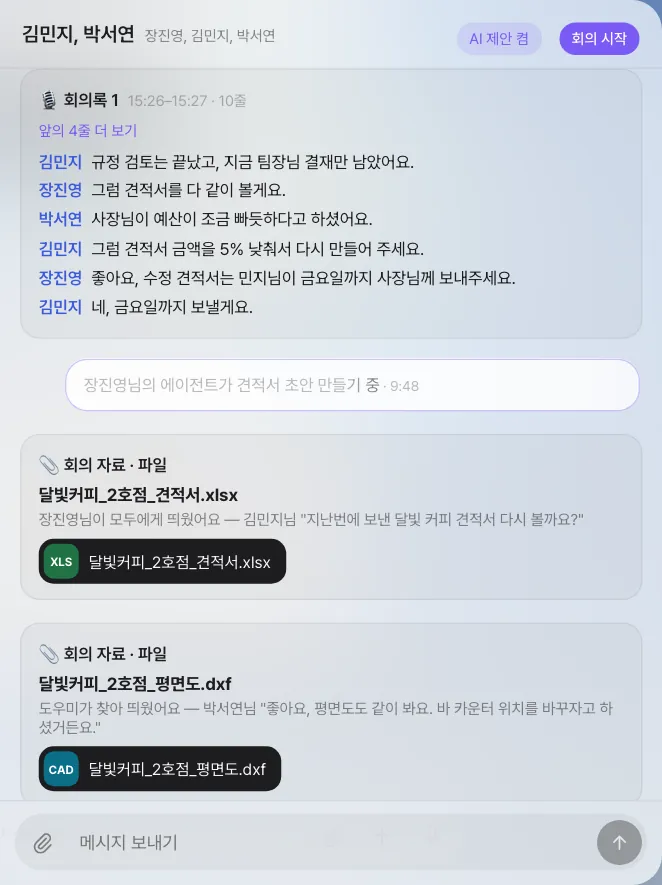
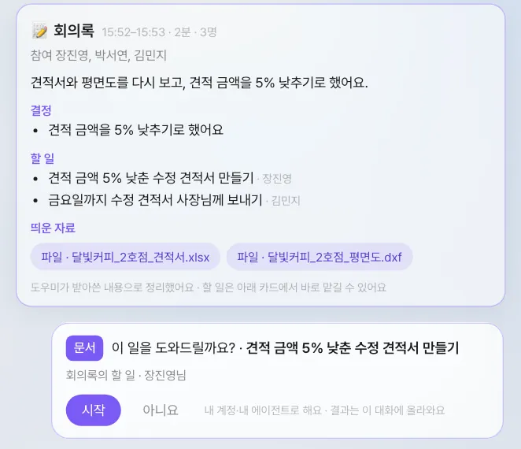
회의록의 할 일 중 맡을 사람이 정해진 것은 그 사람에게 「시작 / 아니요」 카드로 뜹니다. 맡을 사람이 없으면 참여자 모두에게 뜹니다.
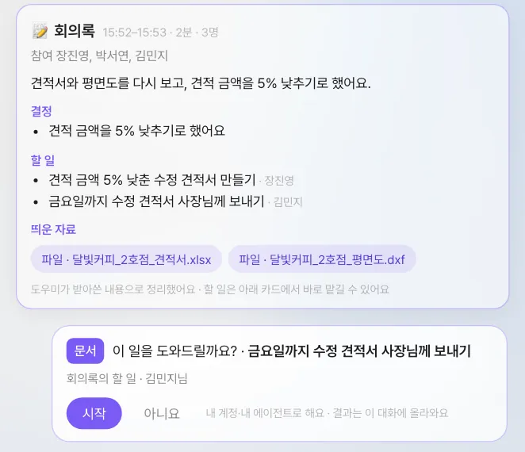
이 기록은 Process GPT 화면에서 같은 방을 열어도 똑같이 보입니다. 회의에 늦게 들어온 사람이나 나중에 방에 들어온 사람도 무엇이 정해졌는지 읽을 수 있습니다.
회의록 아래에 “규칙으로 정리했어요”가 보일 때
현재 버전은 최종 회의록의 요약·결정·할 일을 회의가 끝난 뒤 AI 모델로 한 번 정리하고, 모델이 제때 응답하지 않으면 규칙으로 정리한 회의록(누가 몇 번 말했는지, 맡긴 작업, 띄운 자료)을 대신 남깁니다. 이때는 결정과 할 일이 비어 있으니, 방에 남은 회의록 블록(받아쓴 말)을 보고 직접 정리하세요. 모델이 정리한 회의록에는 위 그림처럼 “도우미가 받아쓴 내용으로 정리했어요”가 붙습니다.
따라 하기 6 — 두 언어로 하는 회의#
15장에서 도쿄 협력 스튜디오의 조명 디자이너 사토 유키(예시 인물)와 대화방을 만들었습니다. 사토 유키는 일본어로, 장진영 팀장과 김민지는 한국어로 말합니다. 통역사는 필요 없습니다. 각자 자기 언어로 말하고, 자기 언어로 듣습니다.
- 주 언어를 정합니다. 「설정 › 계정 › 내 정보 › 주 언어 / Main language」에서, 또는 회의에 들어가기 전 화면의 「내가 말하는 언어」에서 고릅니다. 고른 언어는 내 계정에 저장됩니다.
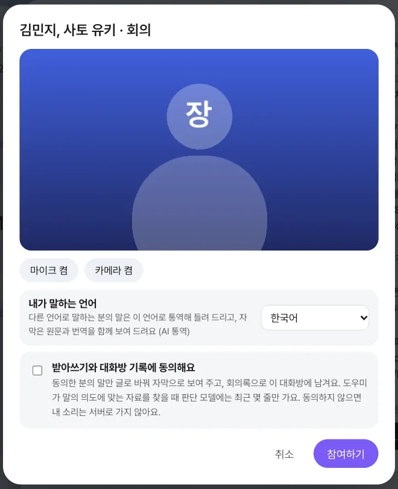
- 사토 유키가 있는 방(장진영 팀장 화면에서는 “김민지, 사토 유키”)에서 「회의 시작」을 누릅니다. 다른 두 사람도 같은 방에서 들어옵니다.
- 주 언어가 서로 다르므로 통역이 저절로 켜집니다. 화면 위에 「AI 통역 · 한국어 ⇄ 日本語」와 「통역 켬」 스위치가, 타일마다 그 사람의 언어가 보입니다.
회의에서 오간 말(실습 대본과 장진영 팀장 화면에 보인 번역):
| 화자 | 말 | 장진영 팀장 화면 |
|---|---|---|
| 장진영 | 유키 님, 와 주셔서 고마워요. 2호점 저녁 조명 얘기부터 해 볼게요. | (말한 그대로) |
| 사토 유키 | よろしくお願いします。夜はバーカウンターの上の照明を少し暗くしたいと思います。 | 잘 부탁드립니다. 밤에는 바 카운터 위 조명을 조금 어둡게 하고 싶습니다. |
| 김민지 | 좋네요. 바 카운터 위는 따뜻한 색으로 하면 좋겠어요. | (말한 그대로) |
| 사토 유키 | ありがとうございます。照明の図面は金曜日までにお送りします。 | 감사합니다. 조명 도면은 금요일까지 보내드리겠습니다. |
자막에는 받아쓴 글이 그대로 뜹니다. 실습에서는 “저녁 조명”을 “전역 조명”으로, “좋네요”를 “조네요”로 적었습니다.
사토 유키가 한 문장을 말하고 멈추면, 장진영 팀장과 김민지 화면에서는 이렇게 됩니다.
| 듣고 보는 것 | 내용 |
|---|---|
| 한국어로 들리는 말 | 통역이 내 주 언어로 말해 줍니다. 그동안 사토 유키 타일에 「AI 통역」이 뜹니다 |
| 낮아진 원래 목소리 | 통역이 나오는 동안 사토 유키의 목소리는 끊기지 않고 작아졌다가, 끝나면 돌아옵니다 |
| 원문과 번역이 함께 있는 자막 | 한국어 번역 아래에 일본어 원문이 언어 표시와 함께 보입니다. 「원문 먼저 보기」를 누르면 원문이 위로 갑니다 |
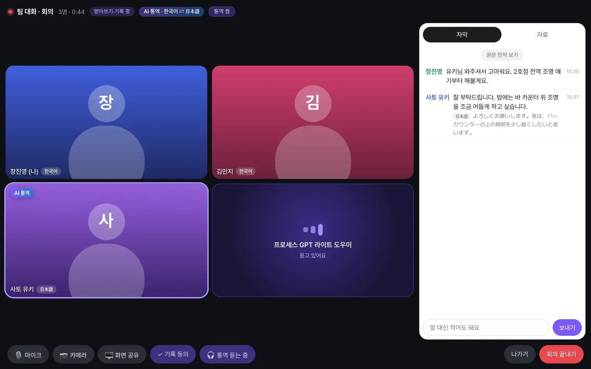
내 말의 통역은 내게 들리지 않고, 주 언어가 같은 사람끼리는 번역도 통역도 하지 않습니다. 사토 유키 화면에서는 반대로, 장진영과 김민지의 한국어가 일본어로 보이고 들립니다.
도우미도 언어를 가리지 않습니다. 다른 언어로 한 부탁은 회의 언어로 번역된 문장으로 알아차려 「시작 / 아니요」 카드를 띄웁니다(따라 하기 4).
통역 스위치#
| 스위치 | 누가 | 효과 |
|---|---|---|
| 「통역 켬 / 통역 끔」(위) | 회의 참여자 누구나, 회의 전체에 | 끄면 모두에게 통역 음성이 멈춥니다. 자막의 번역은 그대로입니다 |
| 「🎧 통역 듣는 중 / 🔊 원래 소리 듣는 중」(아래) | 듣는 사람마다 | 원래 소리를 고르면 모든 사람의 목소리를 그대로 듣고, 내게는 통역 음성을 만들지도 보내지도 않습니다. 자막은 번역된 채로 둡니다 |
| 「내가 말하는 언어」 / 주 언어 | 사람마다 | 내가 말하는 언어이자, 읽고 듣는 언어 |
회의가 끝나면, 각자의 언어로#
방에는 회의록 블록이 줄마다 말한 언어와 번역을 담아 남습니다. 장진영 팀장은 사토 유키의 말을 한국어로 읽고, 「원문 보기」로 원래 말을 봅니다.
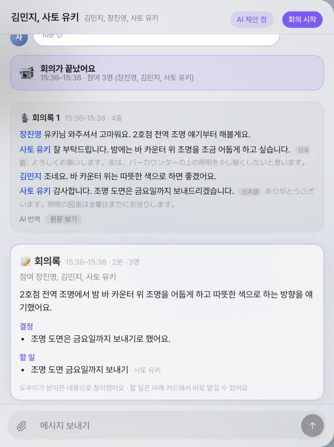
최종 회의록은 회의 언어(회의를 연 사람의 언어, 여기서는 한국어)로 한 번 쓰고, 방 구성원의 주 언어마다 번역해 둡니다. 사토 유키는 요약·결정·할 일을 일본어로 읽고, 「AI translation · 한국어」와 「Show original」로 원문을 봅니다.
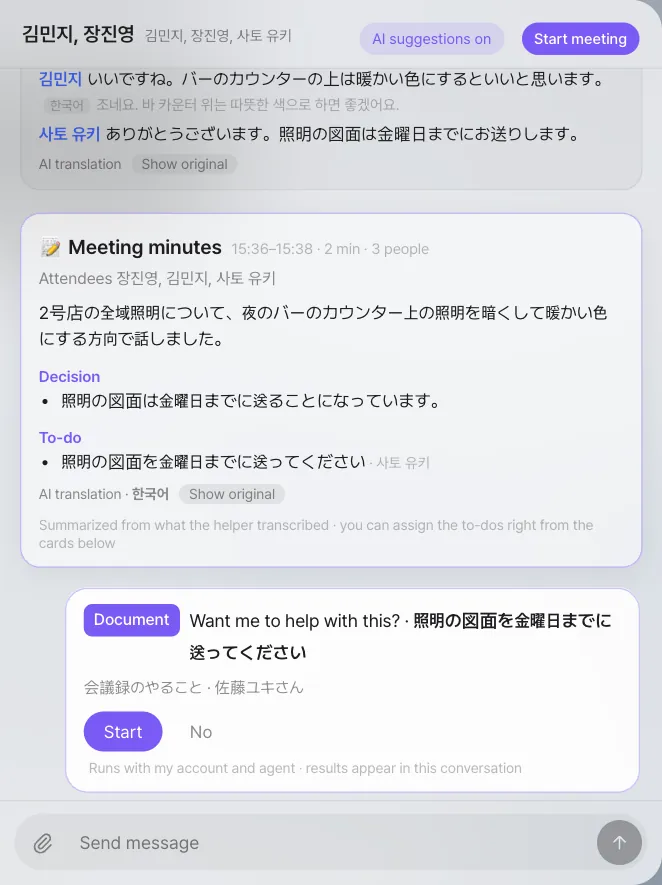
통역의 한계
- 말을 멈춰야 시작합니다. 브라우저는 1초쯤 말이 끊길 때마다 그 말 조각을 보냅니다. 실습에서 통역 음성은 조각이 서버에 닿은 뒤 0.8초(중앙값, 열에 아홉은 1.1초 안)에 시작했습니다. 번갈아 말하세요. 통역이 나오는 중에 누군가 말하면 브라우저의 에코 캔슬러가 그 사람의 마이크를 낮춰 그 말 조각이 사라질 수 있습니다.
- 동의. 받아쓰기에 동의한 사람의 말만 받아쓰므로, 그 사람의 말만 번역·통역합니다. 동의하지 않은 사람의 목소리는 자막도 통역도 없이 그대로 들립니다.
- 키. 통역과 번역은 서버의 OpenAI 키로 합니다. 키가 없거나, 운영 담당자가 통역을 껐거나, 사용 한도를 넘으면 회의 화면에 그렇다고 알리고 원문만 보여 줍니다.
- 결과가 둘. 통역 음성과 자막 번역은 따로 만들므로 표현이 조금 다를 수 있습니다. 받아쓰기가 낱말을 잘못 들으면 번역도 그 글을 따라갑니다.
- 화면 언어. 화면은 한국어와 영어뿐입니다. 한국어가 아닌 주 언어를 고르면 영어 화면이 됩니다.
동의와 스위치#
| 스위치 | 범위 | 효과 |
|---|---|---|
| 「받아쓰기와 대화방 기록에 동의해요」 | 사람 · 회의마다 | 끄면 내 소리는 서버로 가지 않음. 회의 중에도 아래 「기록 동의」 버튼으로 바꿀 수 있음 |
| 「말 대신 적어도 돼요」 | 자막 탭 입력칸 | 마이크 없이 적은 말도 자막·회의록에 들어감(동의한 경우만) |
| 방별 도우미 | 대화방마다 | 끄면 화상 회의만 하고, 방에는 시작·끝 카드만 남음. 현재 버전은 화면에 버튼이 없어 운영 담당자가 바꿉니다 |
| 서버 전체 도우미 | 서버 전체 | 끄면 모든 방에서 도우미·받아쓰기 없이 화상 회의만 |
| 서버 전체 회의 | 서버 전체 | 끄면 회의 기능 전체가 사라짐 |
서버 전체 스위치는 운영 담당자가 서버 설정에서 정합니다(25장).
알려진 한계#
- 6명까지: 참여자의 브라우저끼리 직접 연결하는 방식이라, 현재 버전은 한 회의에 6명까지입니다. 더 많은 인원이 모이는 회의는 다른 화상 회의 도구를 쓰세요.
- 회사 방화벽 뒤: 일부 사내망에서는 브라우저끼리 직접 연결이 막혀 회의가 이어지지 않습니다. 현재 버전에는 이를 대신 이어 줄 중계 서버가 없으므로, 같은 사내망이나 일반 인터넷에서 쓰세요.
- 공동 편집 아님: 「모두에게 띄우기」는 같은 자료를 각자의 사본으로 여는 것입니다.
- 받아쓰기 오류: 받아쓰기가 낱말을 틀리게 적을 수 있습니다(실습에서는 “달빛커피”를 “달빛 커피”로 적음). 자료 찾기는 앞뒤 말과 함께 판단하므로 대개 영향이 없습니다.
다음 장으로#
여기까지가 4부 「팀으로 일하기」입니다. 같은 흐름 — 메일 접수, 평면도·제안서·견적서, 디자인 검토, 견적 검토, 제안 회의, 회신 — 이 고객이 바뀌어도 되풀이된다는 것이 보이기 시작했습니다. 다음 5부에서는 이 흐름을 프로세스로 만듭니다. 먼저 대화로 직접 설계해 봅니다(17장).
확인 문제
- 박서연이 회의에 들어오면서 받아쓰기 동의를 끄면, 박서연의 말은 어떻게 되나요? 회의록에는 어떻게 적히나요?
- 회의 중 김민지가 띄운 견적서 사본에서 금액을 고쳤습니다. 장진영 팀장의 원본 견적서는 바뀌나요?
- 회의록의 할 일 “수정 견적서 보내기”의 맡을 사람이 김민지라면, 그 제안 카드는 누구 화면에 뜨나요?
- 사토 유키가 있는 회의에서 김민지가 「🔊 원래 소리 듣는 중」으로 바꿨습니다. 사토 유키가 말하면 김민지에게는 무엇이 들리고, 자막에는 무엇이 보이나요?
답
- 박서연의 소리는 브라우저가 서버로 보내지 않으므로 자막에도, 자료 찾기에도, 회의록 본문에도 들어가지 않습니다. 화상과 음성은 다른 참여자에게 그대로 들립니다. 최종 회의록에는 “동의하지 않은 분”으로 박서연이 적힙니다.
- 바뀌지 않습니다. 김민지가 연 것은 김민지의 사본입니다.
- 김민지 화면에만 뜹니다. 맡을 사람이 정해지지 않은 할 일만 참여자 모두에게 뜹니다.
- 통역 없이 사토 유키의 일본어 목소리가 그대로 들립니다. 자막에는 여전히 한국어 번역과 그 아래 일본어 원문이 보입니다. 장진영 팀장의 선택에는 영향이 없습니다.